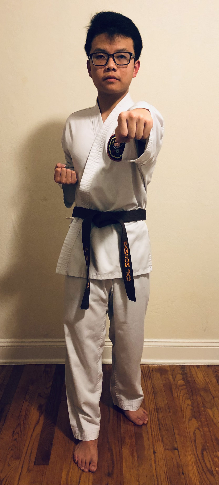
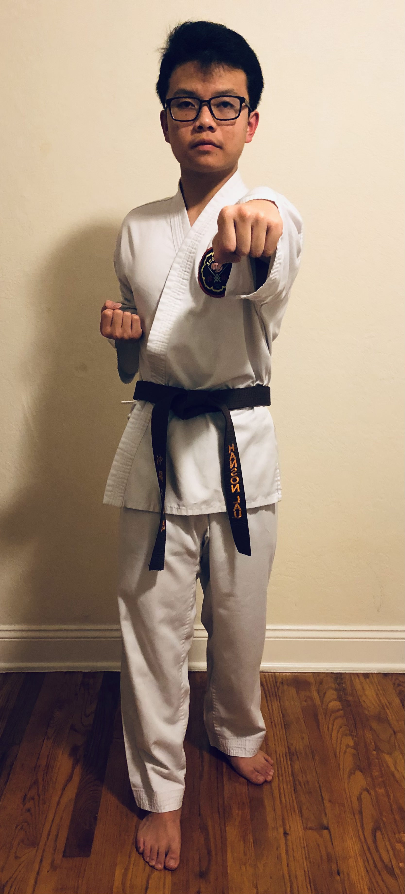
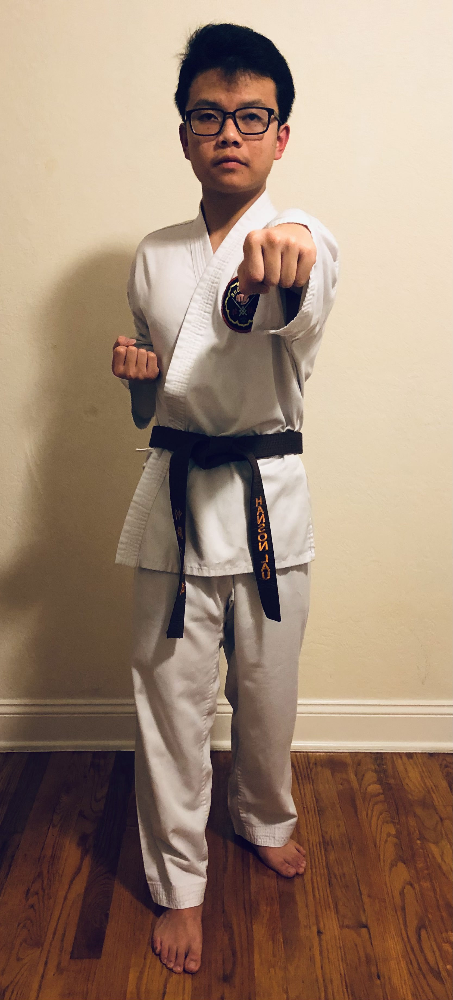

Description
Steps
Please use desktop to view steps
Click on image to see the direction (bird's eye view) of the move


 



Fukyugata Ichi
Please use desktop to view steps
Click on image to see the direction (bird's eye view) of the move
